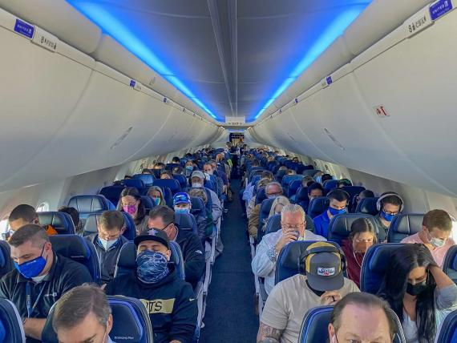

AeroTlaxcala
AeroTlaxcala se preocupa por tu seguridad por eso a través de una serie de protocolos de bioseguridad revisados por un comité de expertos en epidemiología, Aeroméxico continúa implementando su Sistema de Gestión de Salud e Higiene. Según ha comunicado la aerolínea, las siguientes han sido algunas de las medidas contempladas en sus protocolos de bioseguridad tanto en los aeropuertos como en su flota de aeronaves:
Más de 26.000 procedimientos de desinfección profunda en los aviones.
Más de 19.000 revisiones médicas antes de los vuelos y pruebas rápidas y PCR para el personal de tierra y las tripulaciones.
Utilización de más de 1,4 millones de productos para el personal de tierra y las tripulaciones (cubrebocas, guantes, mascarillas, caretas y kits personales).
Más de 21.000 litros de gel antibacterial para las operaciones en tierra y en los aviones.
Más de 9.000 litros de desinfectante para aplicar al equipaje facturado antes de entregárselo a los viajeros.

EN EL AEROPUERTO
Usa cubrebocas todo el tiempo dentro del aeropuerto.
• Evita llevar acompañantes al aeropuerto que no sean viajeros.
• Lávate las manos y usa gel antibacterial.
• Evita tocarte la cara durante todo tu viaje.
• Consume alimentos en lugares que mantengan medidas sanitarias
evidentes.
• Evita aglomeraciones en las filas de documentación y en los filtros
de seguridad.
• Usa toallitas antibacteriales antes y después de usar puntos de
contacto común como mostradores, quioscos de documentación,
charolas, botones de elevadores, etc.
• Una vez que pases el filtro de seguridad, limpia la superficie de tus
objetos con toallitas sanitizantes y ve al lugar más cercano para
lavarte las manos.
• En caso de síntomas como tos, fiebre, dolor de cabeza, dificultades
para respirar, busca atención inmediata del servicio médico del aeropuerto.

Mmzqueda López Orlando Isaac && Mosqueda Calixto Alan Tomas
5F